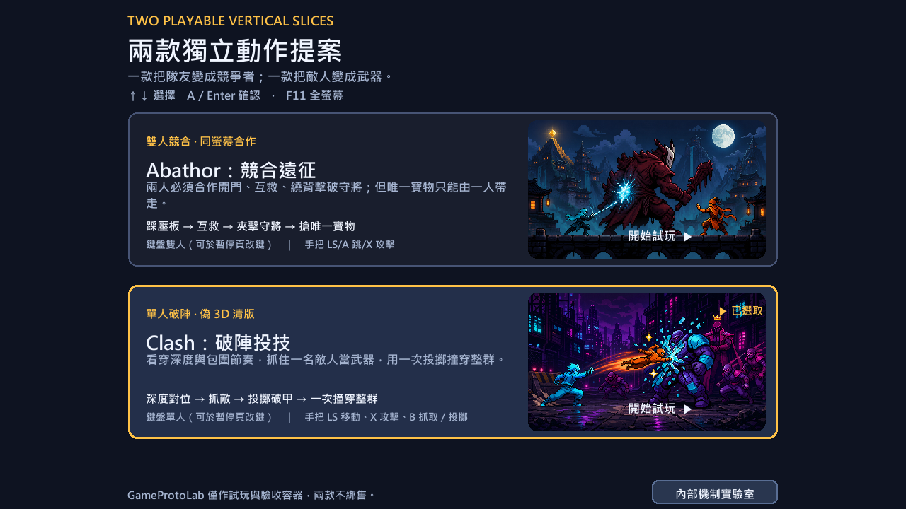

01優先開發
SINGLE-PLAYER BRAWLER
Clash：破陣投技
看穿深度與包圍節奏，抓住一名敵人當武器，用一次投擲撞穿整群。
- 三房流程：深度對位、投擲破門、六敵隊長戰
- 突擊、疾行、重裝、隊長形成可讀的敵群分工
- 核心賣點集中，單人測試與迭代成本最低
UNITY 6 · ITERATION 30
GameProtoLab 是內部試玩與驗收容器，不是三款合集商品。Abathor 與 Clash 已形成可玩的功能垂直切片；Sushiamo 保留為計分、模擬與平衡骨架。Abathor 與 Clash 目前皆為內部代號，正式名稱仍待命名與商標檢索。

PORTFOLIO REVIEW
顯示全部 3 款原型
SINGLE-PLAYER BRAWLER
看穿深度與包圍節奏，抓住一名敵人當武器，用一次投擲撞穿整群。
CO-OP × COMPETITION
兩人合作開門、互救與繞背，但唯一寶物只能由一人帶走。
SCORE-BUILDING SYSTEM
從食材組合、醬料與客人需求堆疊分數，跨越七層門檻。
VISIBLE EVIDENCE
INVESTMENT ORDER
01
抓敵當武器是最容易一句話說清楚、也最能從畫面直接辨識的核心動詞。單人流程降低招募與輸入測試成本，三房關卡又足以支撐下一輪正式化。
競合關係有長期潛力，但要先證明雙人操作、救援溝通與唯一寶物衝突在真人情境成立。
保留模擬器與計分核心，等商店、存檔與內容產能有明確資源再擴張。
VERIFIED, WITH BOUNDARIES
Unity 6000.5.3f1 乾淨建置與效能版建置均成功。
勝利、導覽、設定、改鍵與 100 次切換全部通過。
800×600 至 2560×1440 共 16 張 uGUI 畫面，無裁切互蓋。
兩個啟動器皆 PASS，CSV 2 列、42 欄，檔案雜湊一致。
Development Player 的 Frame、Main Thread 與 GC 指標均合格。
本頁不把自動代打宣稱為真人可玩性或市場驗證。
玩法 HUD、結果頁與觀察表仍採 IMGUI；正式角色、場景、動畫與混音音樂尚未資產化。
控制器改鍵、實體手把驗證與真人首玩尚未完成。真人測試依本輪指示暫緩，不以自動測試替代。